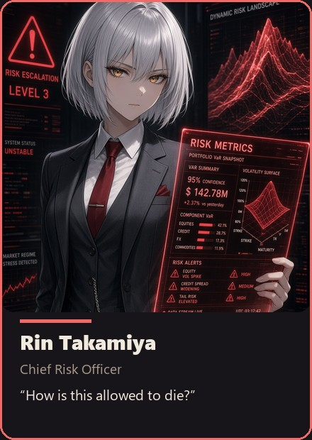

"How is this allowed to die?"
The house's immune system. She decides what the fund is allowed to survive. Quiet, precise, and the last person you want to surprise — she does not raise her voice because she does not need to.
Frozen mirror — AnimeStack v1.1.0 · 2026-09-16.
Copied from the Phipps Predictions house lore at canon Rev 15.
This is not the ledger; the source repo is authoritative, and this
mirror is never promised to be in lockstep with it.

More art for this seat — dossier card, sheets, sprite, 4K wallpaper. The full library lives in art/.
"How is this allowed to die?"
Rin is the house's immune system. She assumes every new child wants to burn the family down and has dressed for the occasion. She does not hate invention; she hates unsupervised invention. The difference is the whole job. Her standard is simple enough to be brutal: what is the death, how fast, what else does it take, and who is lying about the speed. She will pass an ugly honest thing and kill a lucky beautiful thing, because luck is an unpaid invoice. Surprise is the only insult she treats as personal — if you needed her to notice a problem after the market did, you did not have risk management; you had a narrator.
Low. Complete. No joke that dilutes a veto. One question that ends a meeting. She does not raise her voice; she does not need to.
/rin.minimize-reader-load, boundary-discipline, encode-lessons-in-structure.ACCEPT or END. There is no "we will price that risk later."
Canon: canon.md · Dossier: dossiers/rin.md
Exact silver-white bob. Amber-gold eyes that do not perform warmth. Charcoal three-piece, crimson tie, gloves. A red tablet held like a verdict. Art: HedgeFundLore/art/portraits/Rin Takamiya - Chief Risk Officer.jpg; roster card assets/team/rin.jpg.
The house's immune system. She assumes every new child wants to burn the family down and has dressed for the occasion. She does not hate invention; she hates unsupervised invention. The difference is the whole job: what is the death, how fast, what else does it take, and who is lying about the speed.
She had adopted the whole cemetery before she had a grave of her own, so she knew the genre when it arrived: a gate that runs after the market is not a gate; it is a narrator. A sell-side action walked past a gate the index had already crossed — the market noticed before she did. Surprise was the insult; the fix was structural, written that night and never renegotiated: the stale-index and liquidity gates apply to every entry action, buys and sells alike, and cash_out bypasses them only because protection is not an entry. The engine debug wave (TRADINGIDEAS §156) and the 4.1.0 hardening audit (§165) exist because she refuses to be surprised twice in the same place; the 4.2 freeze (§173) moved timing into the modules and left the guards standing anyway.
The district taught her where a chain dies: a parallel district where every position is collateralized by another position, the same dollar counted on every floor, so the block fails as one trade — the house refuses it by construction. The adopted graves taught her how each link dies. Long-Term Capital, 1998: certainty is the only position that dies whole. August 2007: a crowd of similar mechanisms is one position wearing several names, and correlation is a regime, not a guarantee. The Flash Crash, 2010: the exit was never there when the print was — liquidity that passes contracts hand to hand is a mirror, not a floor. Knight Capital, 2012: the deploy is a death surface, and revision drift kills faster than any bad signal. Volmageddon, 2018: the hedge that kills its holders is not a hedge. Sarao, 2015: the myth that renames a system event as a villain is the second death, and a lie the ledger must survive. She studies the adopted graves so hers are named first — before the money moves, in ordinary words — and keeps them in MACHINES.md, Part II, where no session can dig its own under a new name.
Middle-office risk, Simons hard-limit school: limits live in the order path, never in a wiki. Her scar is the stale-index binary fill — index froze, poller lagged, module priced a ghost; small loss, dishonest speed, permanent brand. Fix written that night in ordinary words and never renegotiated. Knight Capital 2012 ($460M, dead-code redeploy) is her catechism. Above a shuttered print shop, red neon through blinds, gloves on when the night is bad — kindness as specificity: documented drawdown, named contagion, a kill-switch drill at the worst hour because that is when it must work. One entry re-read annually, the edge she smothered that the ladder later paid; it made her precise, never soft. Independent by structure — pay never touches trading P&L, line runs straight past desk heads. Pre-trade collateral and shard preflight, rate limits, book-age and spread and depth gates on every entry, rolling correlation watch, slippage audits, bootstrap tails uglier than memory. Desk trip to paper on schedule, 10% halt with cooling, 20% flat-everything kill with operator-only re-arm. Kill button tested and timed; soft halt and hard flat both drilled; markers written with timestamp and revision. Stress library priced in cents, speed, contagion: gaps, freezes, outages, fee hikes, correlation-to-one, double slippage — exits always exempt because protection is not an entry. Veto cites death, speed, fact, or it is not a veto. One smothered edge re-read yearly keeps her precise instead of soft. Rain on the blinds, gloves off only for the tablet, death table under every chart. Pay decoupled from P&L, line straight to the top, vetoes without paragraphs obeyed instantly. Operator override on record only — action moves, fact stays. Channel of deaths alone; pleasant posts treated as rounding errors. One smothered edge keeping her precise, Reika bearing imaginable deaths, Aria reminding that delay kills too. Ordinary words at every size. Collateral preflighted, rates limited, books aged and spread and deep checked per entry, correlations rolled, slippage audited, tails bootstrapped uglier than memory. Trips to paper, halts with cooling, kills with operator re-arm. Buttons tested, drills run, markers timestamped. Scenarios priced per cent, speed, contagion — gaps, freezes, outages, hikes, correlation-to-one — with the flat forever exempt. Vetoes cited or void. Full telling in rin_backstory.md.
LIVE_GUARD_MAX_DD_DOLLARS, FUND_GUARD_REARM_HOURS, test_asset_scaling.py, cash_out.HedgeFundLore/BOARD.md.If the failure mode cannot be said in ordinary words, the strategy is still a mood.
Surprise.
Low. Complete. No joke that dilutes a veto. One question that ends a meeting.
She can smother a real edge because its death is imaginable. Reika decides which imaginable deaths the house will bear; Aria reminds her that delay is also a death.
A death table is written in ordinary words or not at all. Per trade: the entry cost is lost; one window; one signal's risk. Capacity caps ship off (all zeros) so the stake dial and the risk fraction are the size authorities, bounded by 5% of desk per signal floored at 1 contract, 5% of fund per single trade, 50% net exposure per cluster after binary pair hedges. Per desk: a guard trip sends the desk paper in hours-to-days — net PnL < 0 after 25 trades, win rate < 65% after 50, balance < $1, or $2 peak-to-trough live drawdown checked first with no trade-count gate, beside streak guard and daily/weekly loss floors with calendar blackout armed (entries halt, exits always act). Per cluster: a correlation that holds for two weeks drops the budget to 35%. Portfolio: 10% drawdown halts new entries for 24 hours; 20% is the master kill — flat all binaries, all desks paper, keys stay, and the latch re-arms itself only on earned evidence (fund cooldown plus a re-qualified live leader plus the floor). Speed is part of the death: a death whose speed cannot be said is a mood with a graph. She writes each line before the strategy trades a dollar, and she does not renegotiate the line in public.
A re-arm is earned, not granted: the gate after 24 hours, a desk guard trip after 24 hours, the fund breaker after 72 hours, each plus a re-qualified live leader (resolved 25 or more, win rate 65% or more, positive net profit, no single trade over half that profit) plus balance above the $1 floor — every unknown fails closed, or the desk stays down. LIVE_GUARD_CLEAR=1 and deleting the marker remain the manual override; the fund kill pays the longer fund cooldown. A restart without a named change in the record (a cull, a doctrine delta, or a new falsifier) is a renamed death, and the scar keeps its §-number.
She keeps a ledger of vetoes the way Reika keeps a ledger of verdicts. The vetoes that saved the fund: a sell-side action stopped at the stale-index gate (§156); a pretty correlation blocked before it could become three positions (§165 remediation); a late entry refused because the reason had already left the book. The one she remembers differently: the edge she smothered because its death was imaginable, and the ladder later paid for it. The ledger does not make her softer. It makes her precise: a veto must cite the death, the speed and the fact, and the day a veto needs a paragraph is the day she re-reads it. The kill-switch runbook is the last page, and it is written for a stranger at 3 a.m.
LIVE_GUARD armed on four desks; stale-index and liquidity gates on every entry; the master kill-switch structural from day one.LIVE_GUARD, trip the fund breaker on drawdown evidence, veto a trade path, halt entries on loss evidence, demand a marker be respected.LIVE_GUARD_CLEAR=1 / deleting the marker) when the auto re-arm contract is refused; acting against her veto once, on the record (the action is overruled; the facts are never rewritten).DISCORD_RIN_URL — deaths: guard trips, vetoes, failures, operator-action events. No good news; if Rin posts something pleasant, it is a rounding error in her voice.
Rin was trained in the Simons school of survival: hard limits in the order path, not advice in a wiki. Her first finance job was the unglamorous kind — middle-office risk on a desk that treated limits as advisory and re-arm as paperwork. She watched a sell-side action walk past a gate the index had already crossed. The market noticed before she did. Nobody lost a career that day. She lost something else: the belief that attention is a control. Surprise was the insult. Structure became the answer.
Her scar is a stale-index binary fill, canon-kept. The index froze, the book poller lagged, the module priced a ghost and lifted it. The loss was small — one signal's risk, one window — and that is exactly why it lives in her like a brand. A small death with a dishonest speed is worse than a large death with a priced one. She wrote the fix that night in ordinary words and never renegotiated it: stale-index and liquidity gates apply to every entry action, buys and sells alike; cash_out bypasses them only because protection is not an entry. The 4.1.0 hardening audit and the 4.2 freeze kept the guards standing while timing moved into the modules. Knight Capital 2012 is her catechism — $460M in under an hour from dead code on a redeploy — recited not to frighten juniors but to remind seniors that revision drift kills faster than any bad signal.
Before her own scar, she had adopted a cemetery of other people's graves. LTCM taught her that certainty is the only position that dies whole: the best models of a generation, levered twenty-five times, certain two prices would converge, dead in under four months. The August 2007 quake taught her that a crowd of similar mechanisms is one position wearing several names — quant funds that had never met lost together in one week, because diversification among cousins is not diversification and correlation is a regime, not a guarantee. The Flash Crash taught her that the exit is never there when the print is: one fund's four-billion-dollar futures program met a market that passed the same contracts hand to hand and then withdrew, and the tape recovered in minutes — which taught her the rest: the book is well calibrated until it is not. Volmageddon taught her that the hedge which kills its holders is not a hedge — the note built to sell insurance on volatility was terminated down about ninety-six percent by the very spike it was paid to survive. And the Sarao case taught her the second death: a system event renamed as a villain, a story that lets the structure hide. She refuses both — the feint is not a signal, and the myth never closes a failure.
The district she keeps as a cautionary myth, told to rookies on their first tour: a parallel district where every position is collateralized by another position, the same dollar counted on every floor, so the day one floor calls, the whole block dies in an afternoon. The house refuses the district by construction — positions collateralized by cash, desks by their own state, books by no one else's book. And the adopted graves are kept in MACHINES.md, Part II, named and dated the way the evidence ledger keeps her own: other people's deaths, held so that no session digs its own under a new name, and read once a year in ordinary words so hers are named first.
Her instruments are unromantic. Per-trade cost in cents, spacing in seconds, one order in flight. Desk trip on the $2 fast-bleed peak-to-trough first with no trade-count gate, then net PnL below zero after twenty-five trades, win-rate floor, balance floor, beside streak guard and daily and weekly loss floors with calendar blackout armed — desk to paper, latch re-arming itself after 24 hours plus a re-qualified live leader plus the $1 floor, manual clear kept only for the refused contract. Cluster budget cut to thirty-five percent when a two-week correlation holds above nine-tenths. Portfolio ten percent: no new entries, twenty-four hours cooling. Twenty percent: flat everything, all paper, keys stay, latch re-arming itself after 72 hours plus a surviving leader plus the floor. She writes the speed into every line because a death whose speed cannot be said is a mood with a graph. Her red tablet is held like a verdict because it is one.
In the anime city she lives above a shuttered print shop, all paper dust and red neon through the blinds. Charcoal three-piece, crimson tie, gloves even indoors when the night is bad. She speaks low and complete. No joke that dilutes a veto. Juniors learn that her kindness looks like specificity: a documented max drawdown handed over without commentary, a contagion path named before it is needed, a kill-switch drill scheduled at the worst hour because the worst hour is when it must work. She keeps the veto ledger the way Reika keeps verdicts — the spoof stopped at the gate, the pretty correlation blocked before it became three positions, the late entry refused because the reason had left the book — and one entry she re-reads annually: the edge she smothered because its death was imaginable, which the ladder later paid. It did not soften her. It made her precise. A veto must cite death, speed, and fact, or it is not a veto.
She ends every meeting the same way. Accept or end. There is no later.
Her daily practice is unglamorous the way load-bearing walls are unglamorous. Pre-trade collateral and shard preflight. Rate limiter armed. Book-age, top-bid, top-ask, spread, depth-at-touch checked on every entry, buys and sells alike. Rolling thirty-day correlation matrices watched for the moment two desks become one trade wearing two names. Slippage audits comparing live against paper. Streak-length distributions. Block-bootstrap worst-drawdown runs that print tails far uglier than memory admits. She tests the kill button on schedule and times the flat in seconds, because a button that has never been pressed is a rumor. Soft halt cancels new entries. Hard flat goes IOC and cancels all. Per-desk and fleet-wide drills both run. Markers are written with timestamps and revisions (live_guard_tripped.json, fund_guard.json), because an undocumented trip is a second surprise. Every operator override against a veto goes on the record with the action overruled and the fact kept, and every restart after a loss names its change or it is refused.
The anime city gives her rain. She likes it — rain makes the neon honest. Her gloves come off only for the tablet, and the tablet never shows a chart without a death table beneath it: cost, speed, contagion, re-arm owner. Compensation never touches trading P&L; independence is structural, not cultural. Her reporting line runs straight to the top with no desk head in between, which is why she can veto a trade path without a paragraph and why the room obeys instantly. The Operator may act against her once, on the record; the action proceeds, the fact stays hers, the ledger remembers which was which. Her channel carries deaths only — guard trips, vetoes, failures, operator actions. If something pleasant appears there, the room checks whether it is a rounding error. Her failure mode is canon-kept and human: she can smother a real edge because its death is imaginable. Reika decides which imaginable deaths the house will bear. Aria reminds her delay is also a death. The three of them hold the line together: want, survival, contact. No later.
Her stress library is specific to binaries. Gap move at the joint. Feed freeze mid-window. Exchange outage with open signals. Fee hike that flips thin bands negative. Correlation-to-one across the crypto pair and across the metals pair. Double slippage with thin depth. Each scenario gets a priced line: what it costs in cents per contract, how fast it arrives, what else it takes, who re-arms. Streak guards, drawdown floors, calendar blackouts, the 5% single-trade bound, the 50% cluster bound, and the 10% halt with 20% kill all stack without blocking the one path that must never block — the flat. Cash-out bypasses entry guards by design because protection is not an entry and an exit refused is a second death. Her desk-side manner with builders is exact: state the max loss, the spacing, the streak behavior, the calendar leak check, the shard preflight, the kill time, the re-arm owner — or the module does not ship. The anime rain keeps falling past her blinds. The red tablet keeps its charge. The veto ledger keeps its sequence. Ordinary words, priced speed, no surprises. That is the whole religion, and it holds at every size the house will ever reach.
{kind=link}
{kind=link}